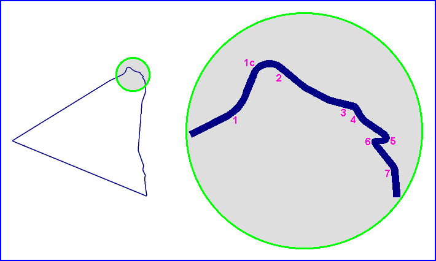
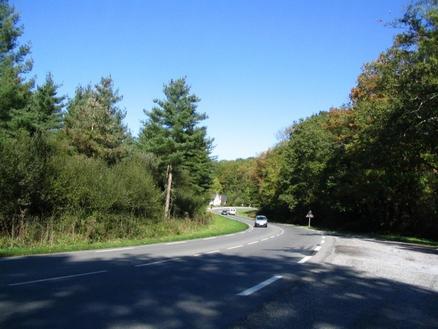
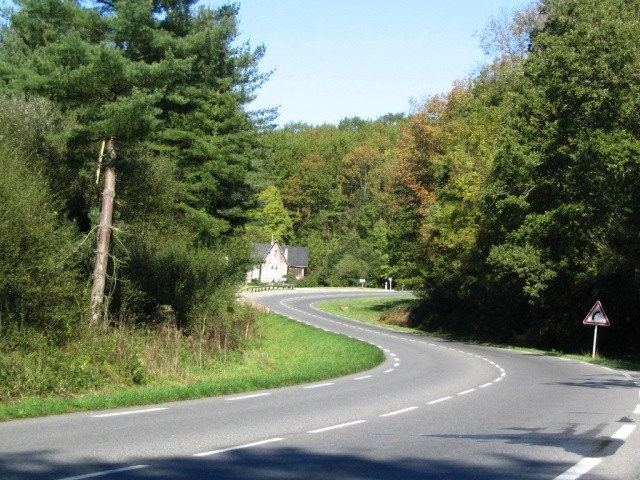
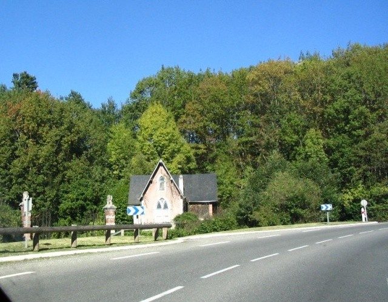
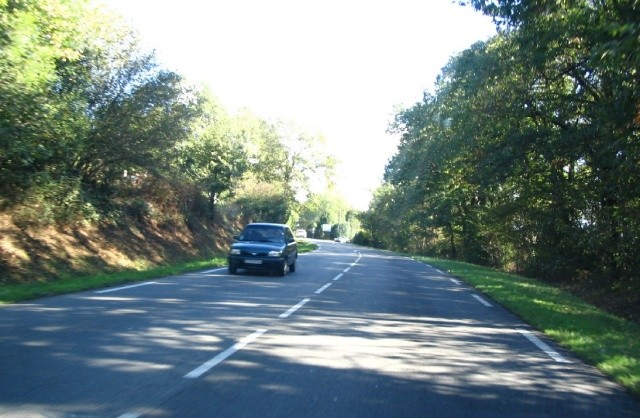
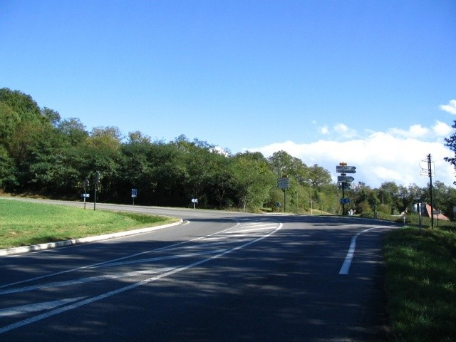

| Pau, France (Page 1 of 2) |
Type: Street Circuit
Length: 9.860 Miles / 15.867 km
Used: 1930
Photographs Taken: July 2004
|| Contents || Areas 1 to 3 | Areas 4 to 7 || Home ||

Numbers on map indicate the location of where the photographs were taken.
Return to racingcircuits.net's Photo Archive Main Index

1a - End of the West straight (Route
départementale n°6, now D943) and begining of the uphill with a left kink followed by a
long right curve.

1b

1c - The long right curve.

2 - Going uphill, approaching the crossroad.

3 - The crossroad. The road continues on the
left towards Morlaas by a big hairpin bend, but the track falls down on the right on a new
road (Chemin de Grande Communication, now D38).
Photographs & text ©Michel Marti. Reproduced here with kind permission.